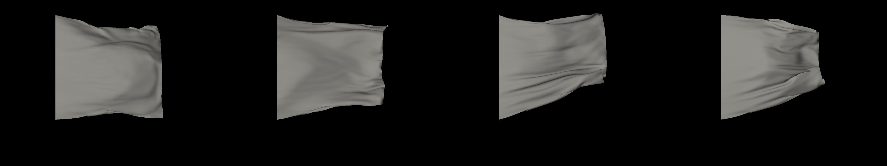

一、个人信息
- 姓名：赵智源
- 学历：硕士在读，预计2023年1月毕业
- 学校：北京航空航天大学
- 专业：计算机学院 - 电子信息
- 研究方向：计算机图形学 - 物理仿真
- 游戏兴趣：工程师游戏、JRPG、独立游戏。e.g. 缺氧、戴森球、环世界、异星工厂；最终幻想系列、炼金工房系列；Celeste、Hades、Noita、5D
Chess。
- 目前在网易互娱N星计划实习中
二、研究方向：物理仿真
硕士毕业设计：实时柔体切割仿真
重点研究如何处理复杂的切割路径，以及如何达到实时水准。
Computer Methods and Programs in
Biomedicine在投（医工领域的期刊，中科院分区2区）。
技术栈：
- PBD(Position Based
Dynamics)：近年来较为流行的仿真方程求解算法，适用于实时可交互场景，例如游戏。
- Shape Matching：用于建模柔体的内部弹性势能。
- Marching Cube：用于对柔体表面进行蒙皮。
- CUDA：用于进行并行程序编写。
核心内容：
- 在使用Shape
Matching进行柔体仿真的情况下，检测切割发生时间和位置的方法，以及对应更新物体拓扑结构的方法。
方法效果：
- 加速：200 ms/帧 ⇒ 50 ms/帧
- 切面光滑、允许复杂的切割路径：
业余对PBD进行的理论学习
- 对PBD的阅读笔记：单纯解读了下PBD的原论文。接受度还算高，知乎3k阅读、19赞同、27收藏。demo使用taichi编写。
- 站在最优化角度对XPBD进行的解释：XPBD为PBD的作者站在新的角度上对PBD做的解释，并稍作了些修改。不过原作者自始至终都是站在约束投影的角度进行解释。我则是站在最优化的角度上重新做了解释，更符合近些年的流行趋势。
- 站在最优化角度对Projective
Dynamics的解释：PD的原作者最开始也是站在约束投影的角度上进行解释，近些年则开始站在最优化角度进行解释。我延续他的思想，对他的过往论文用同样的方法进行了解释。
- 对FEPR的阅读笔记：原作者仿照PBD的约束投影思想，通过调整系统动量来确保动量守恒、能量守恒。我将其作为PBD思想的延伸进行了学习。
- 对ADMM的阅读笔记：原作者用ADMM方法求解隐式牛顿法的方程，和我一直以来的最优化思想一致，所以研究了下。
业余的仿真/并行编程经验
- Marching
Cube实现：除了CUDA以外没有调用任何第三方库，包括inclusive_scan在内都是手写的。
- 简单布料仿真及渲染：基于显式欧拉法和弹簧质点法的简单布料仿真，在自己写的场景图渲染引擎里实现。

- 布料碰撞检测：基于XPBD的布料仿真，碰撞检测和碰撞响应都是手写的。使用taichi编写，渲染使用blender。
三、图形相关的业余学习
- 在阅读《Real-time Rendering》期间作为练习开发的。
- 内部以类似fbx文件的方式表示场景图，并进行实时渲染。
- 手写实现了phong model
shader、基于LTC的区域光、位移贴图、法线贴图、fbx模型加载
- 调用开源代码，支持了FXAA和HBAO
用Unity或WebGL写的demo
- 实验性的unity
demo
- 一个二维平台游戏，特点是物体的碰撞体与物体的外形完全一致，且动态变化。
- 当物体变形时，碰撞体也会变形；当物体出现在镜子里时，镜子里出现的那部分物体也具有碰撞体。
- 一些webgl demo
一些博客
四、学业与编程
数学基础
- 考研初试数一133/150（线性代数+微积分+概率统计）
- 研究生课程数值分析83/100（课程内容包括常微分方程的数值解法、数值积分、非线性方程组的数值解法等）
学习C++11时写的一些博客
跨度至少半学期的课程大作业
- 计算机组成原理：实现支持mips精简指令集的流水线CPU
- 操作系统原理：实现支持页式内存管理、文件管理、进程管理的类unix操作系统
- 编译原理：实现支持类C文法的编译器
- 程序设计原理：自行设计编程语言，并为其编写编译器
- 我设计的语言叫RTEX，一种markdown扩展。允许在markdown中插入可执行的rtex语句，并将执行结果直接输出到结果文档中。